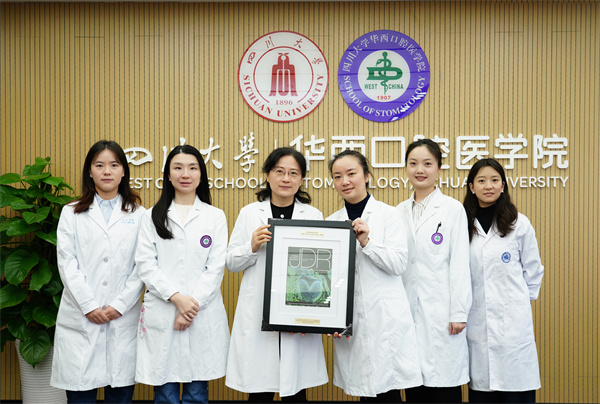

学院通知 · 科研创新
我院牙髓再生研究获JDR年度封面论文奖（the IADR/AADOCR JDR Cover of the Year）
发布时间：2026/02/12
近日，国际牙科、口腔和颅面研究协会（IADR）奖项陆续公布。我院叶玲教授团队于 2025 年发表在 Journal of Dental Research 的研究型论文《DNMTi@ZIF-8 Enhances Biomimetic Pulp Regeneration via Epigenetic Regulation》获得 “JDR 年度封面论文奖”（the IADR/AADOCR JDR Cover of the Year）。 “JDR 年度封面论文奖”（the IADR/AADOCR JDR Cover of the Year）是由国际牙科、口腔和颅面研究协会（IADR）及美国牙科、口腔和颅面研究协会（AADOCR）联合颁发的重要奖项，旨在表彰当年在国际口腔医学研究领域权威期刊 Journal of Dental Research（JDR）上发表的兼具科学卓越性与视觉影响力的杰出论文，是对相关研究成果学术价值与呈现效果的双重认可。 该项获奖成果构建了 DNMTi@ZIF-8 结合 DPSC 细胞球的仿生再生疗法，通过模拟重现牙发育过程生物学机制，实现了显著的促成牙本质向分化和促血管生成功能，为功能化牙髓再生提供了重要的理论与实践支撑。此次获奖，体现我院在口腔再生医学研究领域的成果积累与探索成效，也提高了华西口腔学术研究的国际影响力。 “JDR 年度封面论文奖”（the IADR/AADOCR JDR Cover of the Year）将于2026年3月美国圣地亚哥举行的第104届IADR年会开幕式向全球与会者公布。该获奖论文通讯作者为我院叶玲教授、郑黎薇教授，第一作者为我院万冕副主任医师、黎子钰主治医师。
